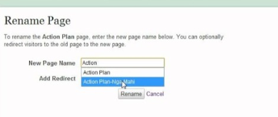

How do I rename a page?
Autoconfirmed users can move a page; this moves the page content and edit history to a new title, and creates a redirect page at the old title. Use the "Move this page" tab at the top of the article to perform a move or rename. Once you have moved a page, click the "What links here" link in the "toolbox" in the right column and fix the links to the old page (which will be labelled as a redirect in the "What links here" list). Images and other media files can only be renamed by administrators and file movers.
